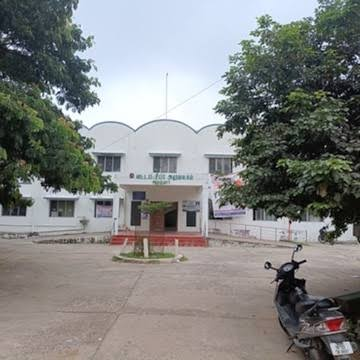
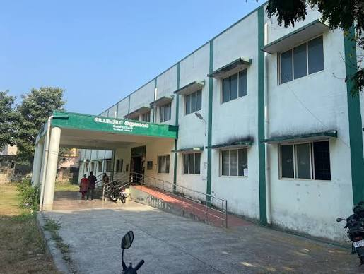
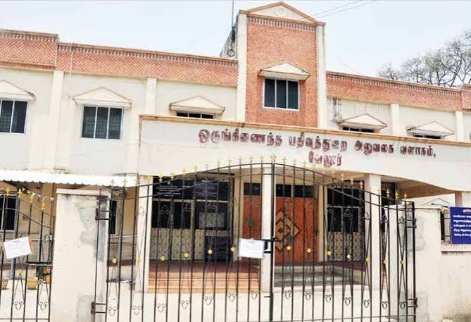

Taluk Office (Tahsildar Office): Handles land records, revenue administration, community certificates, and civil-administrative requests for the Gingee region.
Block Development Office (BDO): Manages local rural development programs, village panchayat funds, and welfare schemes across surrounding rural village limits
Town Panchayat Office: Oversees local civic infrastructure, urban sanitation, water supply, and municipal administration within the Gingee town limits.
Government Taluk Hospital: Provides public healthcare services, emergency medical treatment, and outpatient care for local residents.